see@depthless.oneOne of the largest remaining gaps in business data systems is the ability to navigate growth, adoption and strategic movement.
Growth, adoption and opportunity emerge from complex relationships between audiences, ideas, brands, culture, markets and context. Yet these are still represented separately across business systems, limiting the ability to navigate the true complexity of the opportunity.
Depthless creates a shared relational space where situation and opportunity can be explored, compared and developed simultaneously across the complexity of audiences, stakeholders, competitors and contexts before decisions are made.
Resolve the systems gap - embrace complexity - grow